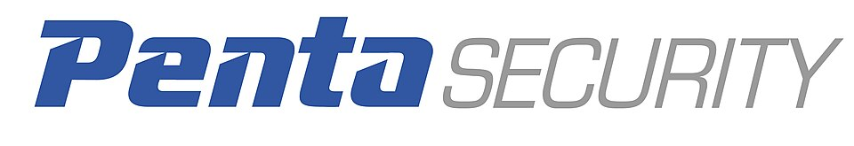

펜타시큐리티 Penta Security
펜타시큐리티(Penta Security)는 대한민국 서울 여의도에 본사를 둔 사이버보안 전문기업이다. 이 기업은 웹, 데이터, 인증 보안 등의 기업정보보안부터 사물인터넷, 클라우드 보안 제품 및 서비스를 제공한다.
최종 업데이트

펜타시큐리티는 어떤 브랜드인가
펜타시큐리티는 웹, 데이터, 인증 보안을 포함한 기업정보보안과 사물인터넷, 클라우드 보안 제품 및 서비스를 제공하는 사이버보안 전문기업이다. 이 기업은 정부기관, 대기업, 중소기업, 교육기관, 금융기관, 의료기관 등 국내외 많은 고객을 보유하고 있다.
펜타시큐리티는 자체 연구소를 통해 독자적인 기술 연구 개발을 진행하며, 총 기업 인원의 약 60%가 기술인력이다. 관계사로는 자율주행보안 및 모빌리티 플랫폼 전문기업 아우토크립트가 있다.
펜타시큐리티는 어떻게 시작되고 성장했나
펜타시큐리티는 1997년에 창립된 사이버보안 전문기업이다. 이 기업은 1990년대부터 다양한 암호화 방식 개념을 주도했으며, 2005년 와플을 출시했다.
2013년 마이디아모를 출시하고, 사물인터넷 융합보안연구소에서 7년간 연구하여 2015년 아우토크립트를 런칭했다. 이후 아우토크립트 사업본부는 2019년 별도 법인으로 분사했다.
펜타시큐리티는 세계 최초 DB 암호화 기술 및 오픈소스 데이터베이스용 암호화 제품을 개발했으며, 국내 최초로 여러 보안 솔루션들을 출시하며 성장했다.
펜타시큐리티의 브랜드 아이덴티티는 무엇인가
펜타시큐리티는 독자적인 연구 개발 역량을 바탕으로 세계 최초 DB 암호화 기술 및 오픈소스 데이터베이스용 암호화 제품을 개발하며 차별화된 보안 솔루션을 제공한다.
펜타시큐리티의 대표 제품과 서비스는 무엇인가
펜타시큐리티는 웹, 데이터, 인증 보안 및 클라우드 보안 제품과 서비스를 제공한다. 대표 제품인 와플은 웹 애플리케이션 및 API 보안 솔루션으로 지능형 웹방화벽 기능을 한다.
데이터 암호 플랫폼 디아모는 IT 시스템 전 계층에 대한 암호화와 통합 데이터 보안 기능을 제공한다. 오픈소스 데이터베이스 보안 솔루션 마이디아모는 MySQL과 MariaDB의 암복호화 및 접근권한 관리를 지원한다.
클라우드 보안 SaaS 플랫폼 클라우드브릭은 웹 보안부터 보안 앱, 사이버 위협 정보 플랫폼까지 다양한 클라우드 보안 서비스를 제공한다.
펜타시큐리티는 지금 어떤 상태인가
펜타시큐리티는 국내외 많은 고객을 보유하며 사이버보안 시장에서 활동한다. 이 기업은 총 기업 인원의 약 60%를 기술인력으로 구성하며, 펜타보안기술연구소, IoT 융합보안연구소, 펜타 블록체인 연구소의 세 개 연구소를 운영한다.
사물인터넷 융합보안연구소는 스마트카, 스마트홈 등 사물인터넷 보안 솔루션을 개발하고, 펜타 블록체인 연구소는 블록체인 상호운용성 및 확장성을 연구한다. 현재 클라우드브릭 서비스를 통해 기업 고객을 넘어 개인 고객으로 사업 영역을 확장하고 있다.
펜타시큐리티 로고는 어떻게 변해왔나
자주 묻는 질문
펜타시큐리티는 어느 나라 브랜드인가요?
펜타시큐리티는 한국의 기술·전자 브랜드입니다.
펜타시큐리티는 언제 설립되었나요?
펜타시큐리티는 1997년 설립되었습니다.
펜타시큐리티의 브랜드 아이덴티티는 무엇인가요?
펜타시큐리티는 독자적인 연구 개발 역량을 바탕으로 세계 최초 DB 암호화 기술 및 오픈소스 데이터베이스용 암호화 제품을 개발하며 차별화된 보안 솔루션을 제공한다.
펜타시큐리티의 대표 제품은 무엇인가요?
펜타시큐리티는 웹, 데이터, 인증 보안 및 클라우드 보안 제품과 서비스를 제공한다.
펜타시큐리티는 현재 어떤 상태인가요?
펜타시큐리티는 국내외 많은 고객을 보유하며 사이버보안 시장에서 활동한다.
펜타시큐리티의 본사는 어디에 있나요?
펜타시큐리티의 본사는 서울특별시에 있습니다(위키데이터 기준).
펜타시큐리티의 공식 웹사이트는 어디인가요?
펜타시큐리티의 공식 웹사이트는 https://www.pentasecurity.co.jp 입니다.
출처와 검증
펜타시큐리티 관련 참고: 공식 웹사이트 · 위키데이터 Q5930964 · 한국어 위키백과 · 영어 위키백과. 브랜드명은 한글과 원어를 함께 표기하되 데이터에 없는 표기는 만들지 않습니다. 기원 국가·설립연도는 검수된 정의문에서 확인된 값을 우선하고, 없을 때만 공식 웹사이트 URL이 일치하는 위키데이터 개체의 값을 씁니다. 위키데이터 값은 2026-09-07 기준입니다.